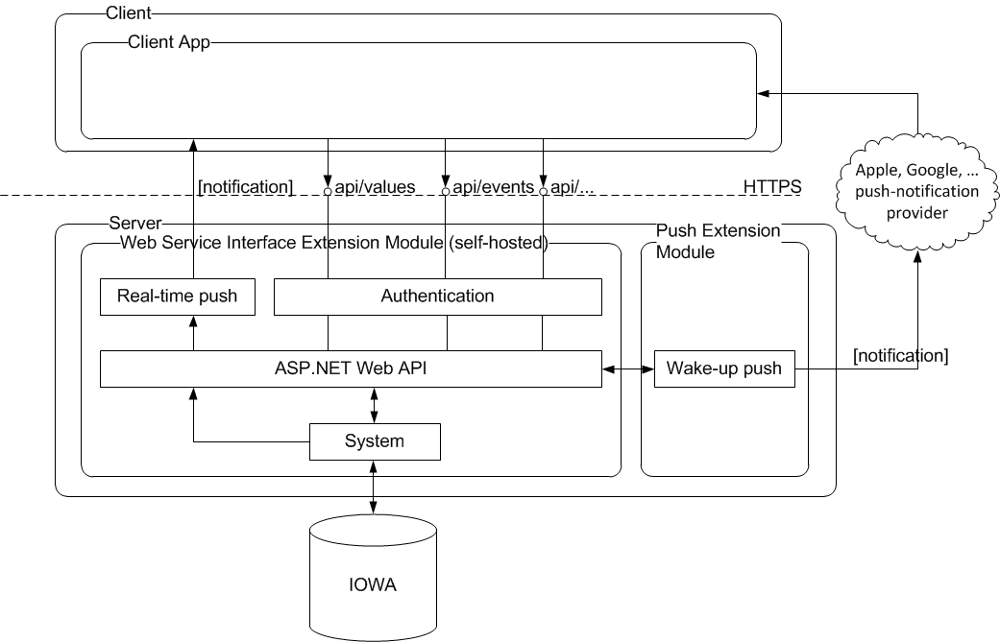

System Architecture and System Limits
The following diagram shows the architecture for the Web Service Interface API.


NOTE:
Wake-up push notifications are part of a future extension module.
System Limits
The following limits apply when using the Web Service Interface:
- Number of concurrent sessions: 100
- Delay for notifications: <1 second
- 5’000’000 value updates / day
- 20’000 value subscriptions
- 250’000 event notifications / day
- 250’000 event-counter notifications / day
- 1’000’000 trends / min
NOTE:
The Client versions of Windows (for example, Windows 11) have intentionally feature-limited versions of IIS. One limitation is the number of concurrent connections which can be as low as 10.This especially affects the usage of push notifications with SignalRen.